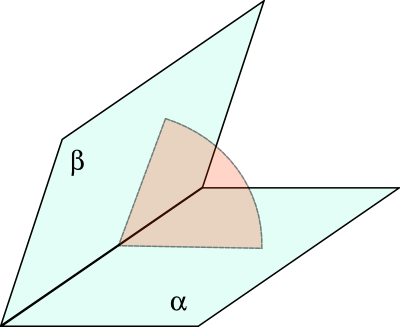

Двугранный угол - это
фигура, образованная двумя
полуплоскостями, имеющими общую
границу
(прямую линию) и не принадлежащими одной
плоскости.

Грани двугранного угла - это
полуплоскости, образующие этот
угол.
Ребро двугранного угла - это общая
граница
(прямая линия) l
полуплоскостей, образующие этот
угол.
Двугранный угол,
ребро которого есть
прямая AB, а
гранями являются
полуплоскости α и β, обозначается αABβ (или CABD, если на разных
плоскостях отмечены точки C и D).
Линейный угол двугранного угла - это
угол, образованный двумя
лучами, имеющими общее начало, лежащее на
ребре двугранного угла, и проведенными в обоих
гранях
перпендикулярно
ребру.
Линейный угол двугранного угла - это
угол, образованный
пересечением
двугранного угла
плоскостью,
перпендикулярной его
ребру.
Градусная мера двугранного угла - это
градусная мера его
линейного угла.
Две пересекающиеся
плоскости образуют в пространстве четыре попарно
равных
двугранных угла.
Меньший из имеющих общую
грань двугранных углов называется
углом между данными
плоскостями.
Сумма
двугранных углов, имеющих общую
грань,
равна 180°